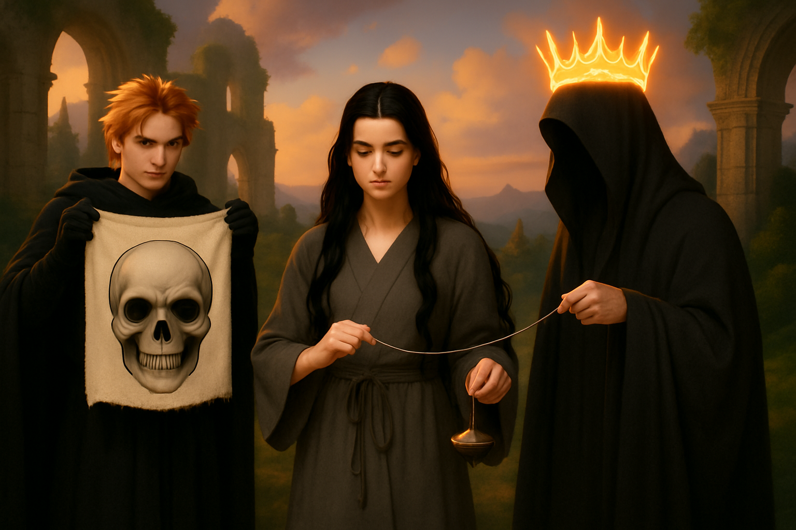

The True Game
The SettingWhere Thought Becomes Reality and Hierarchy Follows Power
The True Game is the Heptaverse's psychic approach to cosmic sustainability — a world where mental ability determines social position, crystal-enhanced talent shapes reality, and advancement through the Game's ranks is both personal ambition and existential necessity. Eleven psychic traditions trace back to Eleven Founders, and every soul in the Game knows their place within the hierarchy.
The Experiment
Originally a modest Core research expedition studying Didir's telepathic abilities, the True Game has become a crucial test of whether talent-based social hierarchies can create civilization resistant to entropy. The outcome matters for all seven realities.
The Hierarchy
Social position flows from psychic talent. Those who command more traditions, or who hold a single tradition at its purest expression, hold authority over those who do not. Every interaction is coloured by rank. Every advancement is earned, observed, and recorded.
Crystal Technology
Psychic talent is amplified, stored, and weaponised through gemstone technology. Focus Crystals enhance manifestations. Memory Stones preserve thoughts. And in the deep places of the world, Corrupted Gemstones offer terrible shortcuts — at a permanent cost.
The Stunts System
All psychic abilities are called Stunts — emphasising their mental and technological nature over any magical interpretation. Characters advance through nine Circles of power within their tradition, each Circle unlocking greater manifestations of their inherited talent.
The Seven Currents
The True Game uses the universal Heptaverse seven-attribute system expressed through psychic society terminology. The seventh — Talent — is unique to this setting, measuring raw psychic force and Game standing simultaneously.
Heritages
Four playable heritages shape your relationship with the Game's talent traditions — and one stands entirely apart from the hierarchy as something the system cannot easily classify.
- Original colonists enhanced through bio-engineering
- Access to all eleven talent traditions
- Full participation at all hierarchy levels
- The benchmark against which all others are measured
- Descendants touched by celestial energies
- Natural affinity for Healing and Clairvoyance traditions
- Cannot access the Necromancy tradition
- Enhanced resonance with light-aligned stunts
- +2 Precision, +1 Awareness
- Natural affinity for Shifting, Clairvoyance, Teleportation
- Low-light vision, +4 Stealth, mental resistance
- Difficulty with Necromancy, reduced Firestarting access
- +2 Acuity, +1 Precision
- Strong affinity for Telekinesis, Sorcerian, Healing
- +2 bonus to crafting and technical skills
- Physical Flying restrictions, limited Shifting access
- +2 Vitality, +1 Awareness — Talent permanently fixed at 3
- Resist and suppress psychic effects of all kinds
- Exist outside the normal hierarchy as advisors and neutral arbiters
- Seven distinct Lineages, each with a unique form of nullification
The Eleven Traditions
The foundation of True Game society rests upon eleven fundamental psychic talents. Each traces back to one of the Eleven Founders — exceptional individuals from The Core who became test subjects in Barish's original psychic hierarchy experiment. Their bloodlines still run true today.
The Crystals of Lom
Scattered across the True Game's landscape are crystals generated by Lom — geological formations that have absorbed psychic energy over millennia. They are among the setting's most coveted and most feared resources.
Crystals of Insight
Many of Lom's crystals enhance and focus talent. They amplify manifestations, store psychic energy for later use, preserve memories, and enable communication across great distances. Practitioners who learn to work with them gain significant advantages within the hierarchy — and Great Houses expend considerable resources controlling the mines and veins where they are found.
Crystals of Harm
Not all of Lom's crystals offer insight. Some drain life, corrupt thought, and twist the personalities of those who handle them. Whether these represent natural formations gone wrong or deliberate Elder Being interference within the True Game's crystalline geology remains an open question — and a dangerous one to investigate.
Backgrounds
Ten backgrounds define where a character enters the Game — and what debts, skills, and connections they carry into play.